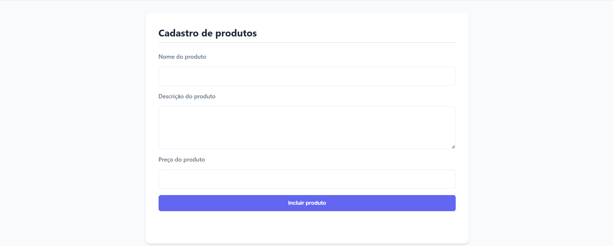
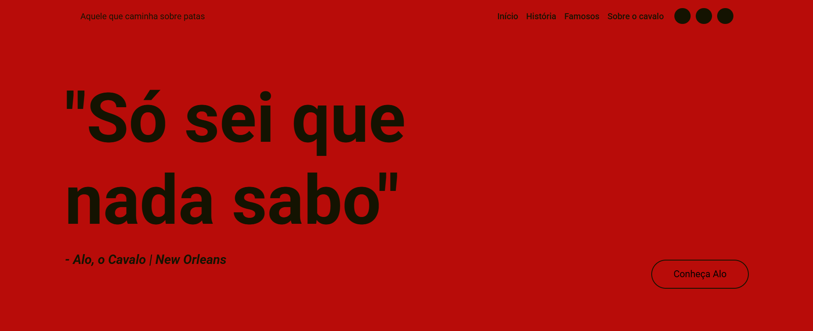

Introdução ao site
Este site é uma "resposta" ao Desafio Relâmpago colocado pela instituição Alpha EdTech, portanto não possui caráter profissional e sim estudantil.
Seu objetivo é mostrar os projetos que foram feitos durante os módulos de HTML e CSS, e também mostrar os projetos que foram feitos durante o módulo de JavaScript. Porém, ao final eu cito 2 projetos que foram feitos em "épocas" distintas - São eles o projeto de BFS e o de Redes.
Não foi utilizado JS para esta página, porém alguns dos projetos citados foram feitos com o auxílio do JS. Além disso, foi utilizado o Figma para estruturação (prototipagem) dos projetos e Git para versionamento.
Desde já deixo meu agradecimentos à todos que fizeram parte desse processo de aprendizado até o momento!
Projetos

Este projeto é um cadastro de produtos simples onde você informa nome, descrição e preço do produto e ele é adicionado à lista de produtos. Após isso os produtos existentes são listados abaixo da seção de cadastro e você pode visualizar, editar e deletar os produtos. Uma funcionalidade interessante desse projeto é que ele utiliza LocalStorage para armazenar os produtos, portanto eles persistem mesmo após fechar e abrir o navegador.
Conhecer
Tecnologias/Técnicas utilizadas nesse projeto:
- HTML
- CSS
- JavaScript
- LocalStorage
- Validações das entradas
- Flexbox
- Eventos
Tecnologias/Técnicas utilizadas nesse projeto:
- HTML
- CSS
- Flexbox
- Responsividade

Essa página surgiu de uma atividade em que eu precisava recriar o design de outra página (inicialmente sem FlexBox) e depois utilizando FlexBox para melhorar a experiência do usuário. Ela é uma página cômica para cavalos, com imagens e textos que contextualizam o usuário como se fosse um "cavalo acessando a Web" - O que claro, é impossível.
Conhecer
Práticas "gamificadas"
Como mover os objetos: Clique e arraste para o local desejado
Como mover os objetos: Clique e mova com as setas direcionais
Obs.: Caso o Shift esteja pressionado, o objeto se move mais!
Projetos adicionais
Estudo em BFS
O por quê de eu ter feito esse projeto é engraçado... Tudo começa com a prova no processo seletivo da Alpha EdTech, que me pediu para resolver a questão descrita no projeto. Eu tive 1h para resolver (se não me engano) e mesmo assim não consegui escrever uma linha de código. Após ter entrado no projeto e iniciado na "comunidade" Alpha, acabei por perguntar meus colegas - Que também fizeram o processo seletivo - como resolvia a questão, mas não obtive uma resposta concreta... Porém um deles me disse que já tinha ouvido falar em um algoritmo chamado BFS que servia para busca em grafos e isso despertou uma curiosidade imensa de minha parte. Logo parti para os estudos (utilizando a mesma plataforma de JS da prova) e acabei por fazer esse projeto.
Obs.: Eu não tenho a questão armazenada, apenas lembrava dela de cabeça por ter sido um grande desafio e querer superá-la.
Link do projeto
Redes de computadores
Esse projeto foi feito como resposta à um outro desafio e nele contém algumas das coisas/conceitos que aprendemos no módulo de redes e de Git. Para ser sincero, ele deve possuir apenas 50% do que foi estudado - Devido à limitação de tempo na época em que o fiz - pois o conteúdo é muito extenso (e também muito útil para a "vida real").
Link do projeto